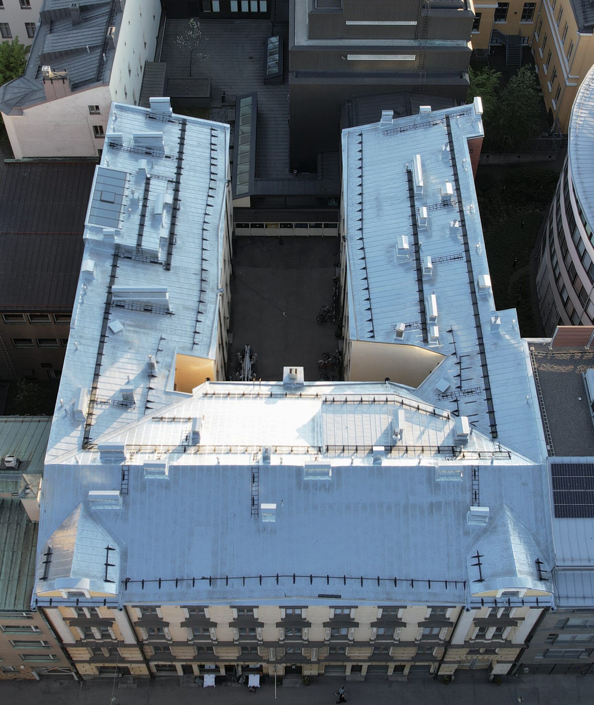
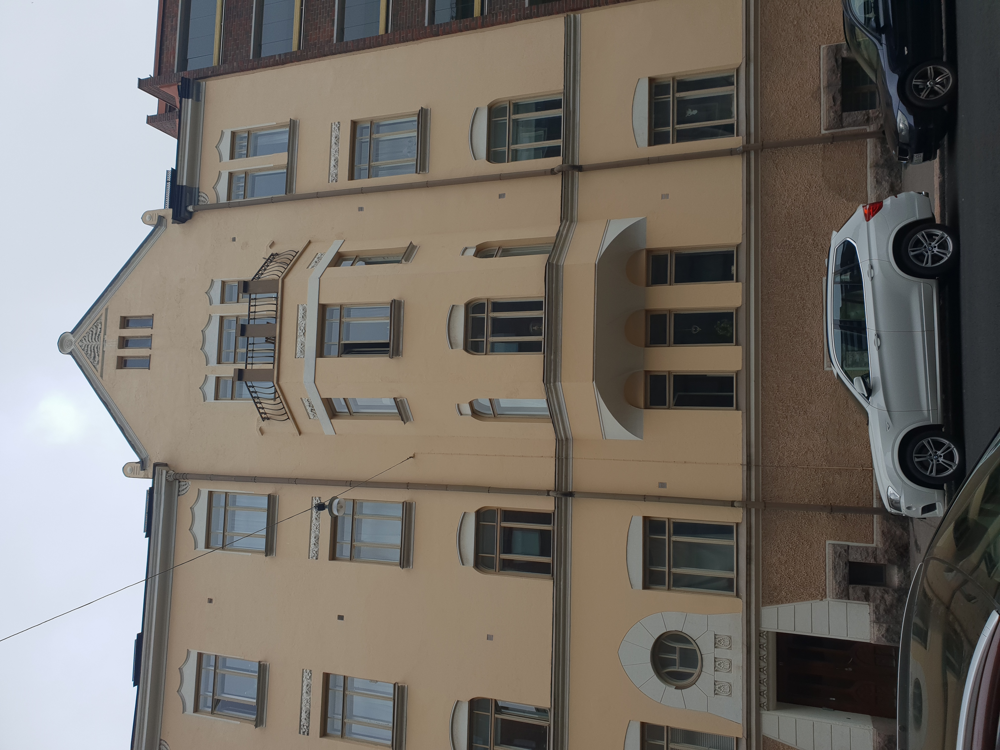

Så här känner du igen oss


Pålitlig renoveringsbyggnad i Helsingforsregionen i över 10 år
Så här känner du igen oss
Svkatto Oy är ett finskt familjeföretag som specialiserat sig på krävande fasad- och takrenovering av värdefulla äldre fastigheter. Vårt primära verksamhetsområde är Helsingforsregionen.
Våra kunder är bostadsbolag, stiftelser, församlingar och fastighetsbolag. Vi genomför varje projekt från början till slut - utan underentreprenörer.
Utforska våra tjänster

Heltäckande renoveringstjänster från ett enda ställe
Vi har genomfört hundratals framgångsrika projekt i hela Helsingforsregionen
Svkatto Oy
Pietarinkatu 11 A90
00140 Helsingfors
FO-nummer: 3510360-8
Huvudkontor i Eira, Helsingfors och två verkstäder i Vanda

00140 Helsingfors - kontor och projektledning
Renovering och restaurering av gamla fönster.
Metallarbeten, ornament och tillverkning av trädelar.